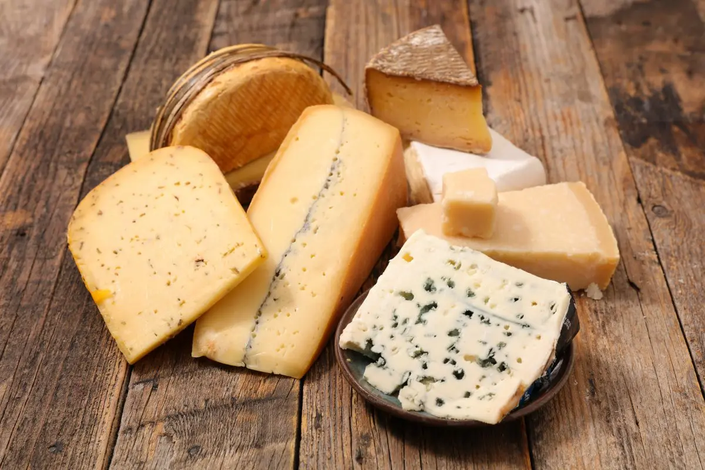
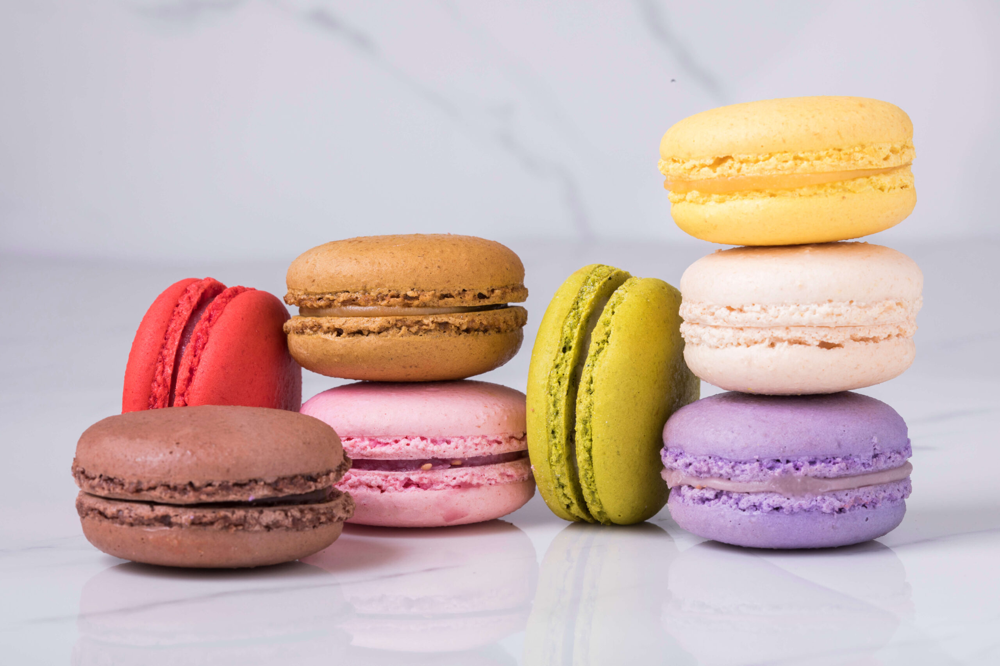
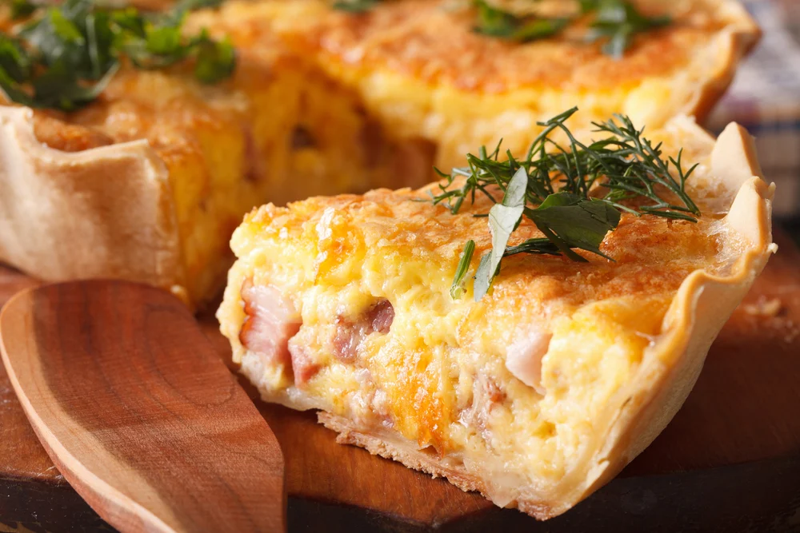
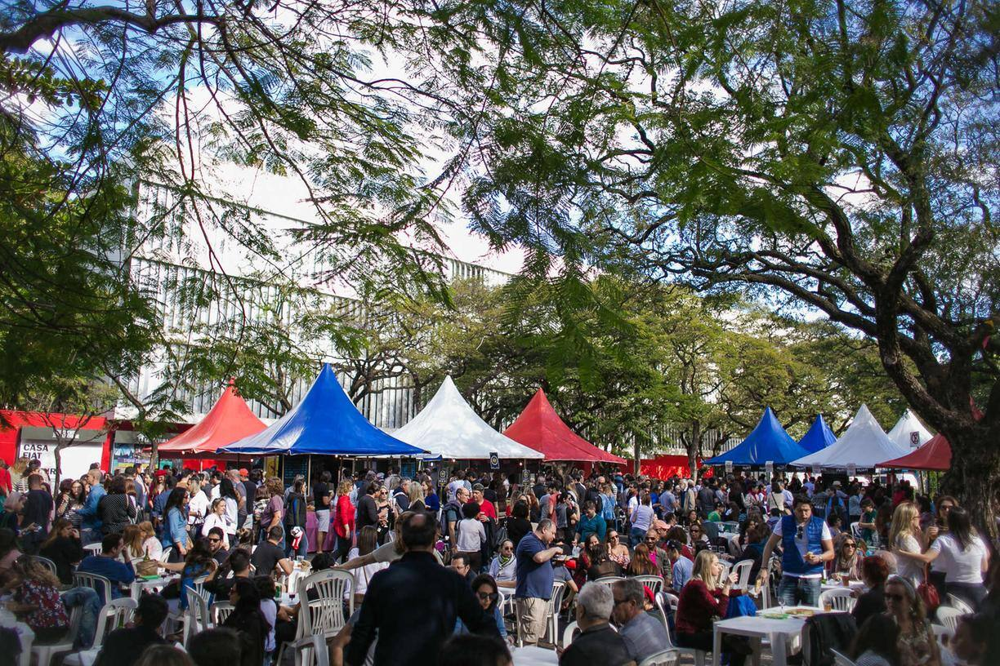
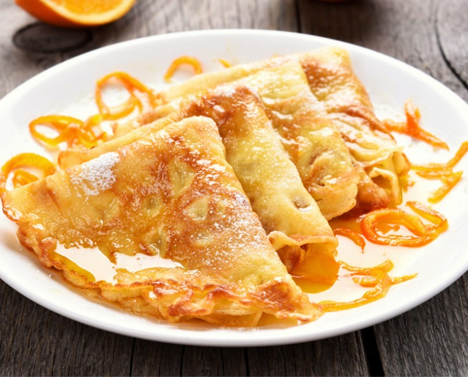

Croissant

Ratatouille |
|
|---|---|
| Ratatouille é um prato tradicional da culinária francesa, originário da região da Provença. É um prato vegetariano que consiste em uma mistura de legumes cortados em fatias e cozidos lentamente em molho de tomate. Os ingredientes típicos incluem berinjela, abobrinha, pimentão, tomate, cebola e alho, temperados com ervas como tomilho, manjericão e alecrim. É um prato versátil que pode ser servido quente, frio, como acompanhamento ou como prato principal, e é frequentemente acompanhado de pão ou arroz. O Ratatouille também se tornou famoso mundialmente graças ao filme de animação da Disney com o mesmo nome, que apresenta um rato talentoso na cozinha que prepara essa iguaria. |
Croissant |
|
|---|---|
| Os croissants são feitos com uma massa de pão levedada, laminada com manteiga para criar camadas distintas. Essas camadas são o que dá ao croissant sua textura característica, leve e crocante por fora, mas macia e aerada por dentro. A origem do croissant é frequentemente associada à Áustria, mas é na França que ele se tornou um ícone da culinária. Na França, é comum desfrutar de um croissant fresco acompanhado de café ou chocolate quente no café da manhã, mas eles também são apreciados ao longo do dia como um lanche delicioso. Eles vêm em uma variedade de sabores e recheios, desde os clássicos croissants de manteiga até os mais indulgentes croissants de chocolate ou amêndoa. É difícil resistir a essa tentação da pastelaria quando você sente o cheiro irresistível de um croissant fresco saindo do forno! |
|
|  |  |
 |
 |
 |
 |  | |
 |
 |  |
 |